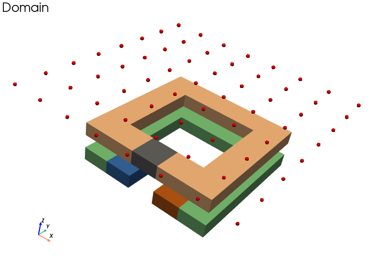
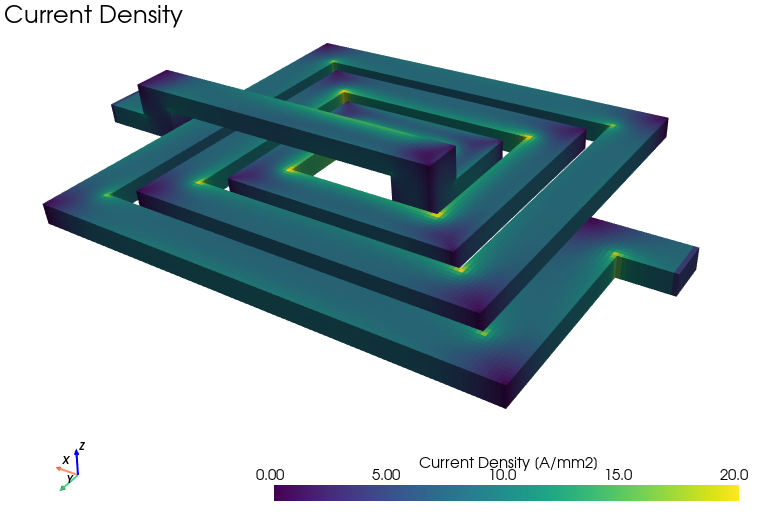
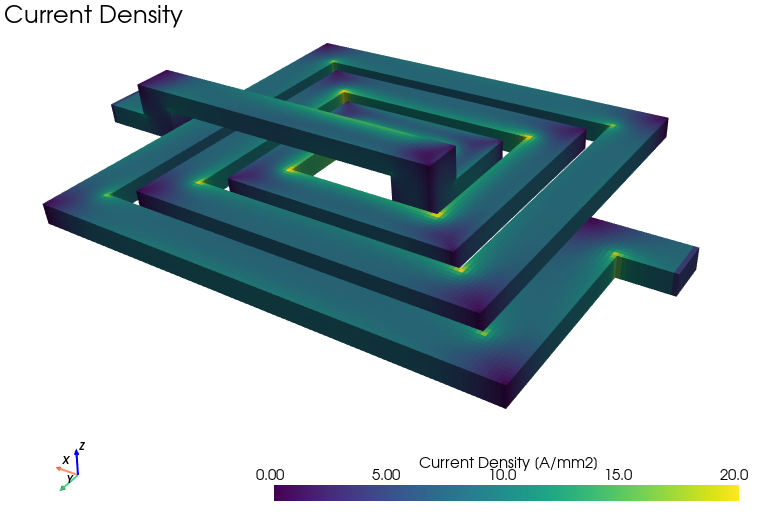
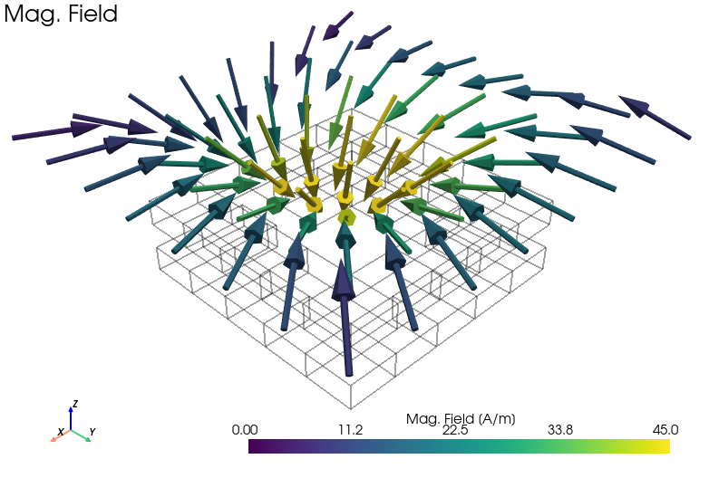
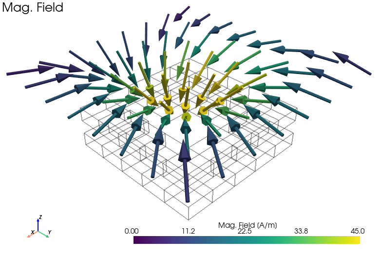
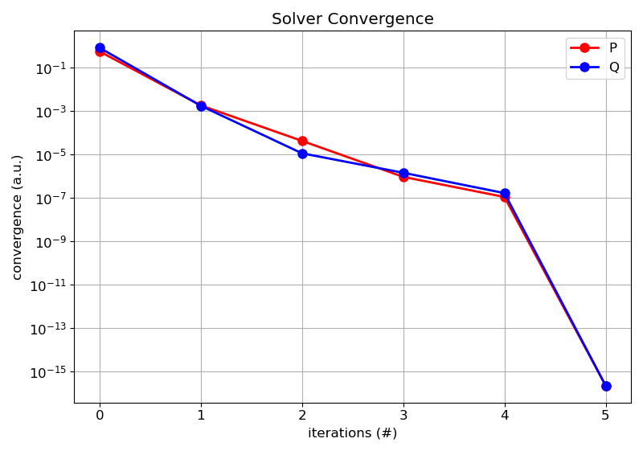
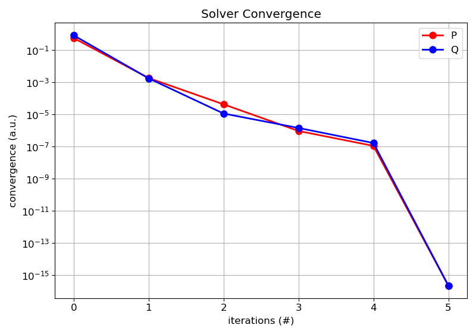

Gallery
Viewer (Mesher Results)



Plotter (Solver Results)
 


 



 


Mesher Log Output
00:00:00.000 : MAIN : INFO : load the input data
00:00:00.006 : MAIN : INFO : load the mesher
00:00:00.945 : MAIN : INFO : run the mesher
00:00:00.945 : MESHER : INFO : check the input data
00:00:00.946 : MESHER : INFO : mesher_voxel : enter : timing
00:00:00.946 : VOXEL : DEBUG : core: size = 48
00:00:00.946 : VOXEL : DEBUG : cond: size = 5
00:00:00.946 : VOXEL : DEBUG : src: size = 1
00:00:00.946 : VOXEL : DEBUG : sink: size = 1
00:00:00.946 : VOXEL : DEBUG : empty: size = 0
00:00:00.946 : MESHER : INFO : mesher_voxel : exit : 00:00:00.000
00:00:00.946 : MESHER : INFO : voxel_conflict : enter : timing
00:00:00.947 : MESHER : INFO : voxel_conflict : exit : 00:00:00.000
00:00:00.947 : MESHER : INFO : voxel_resample : enter : timing
00:00:00.947 : SAMPLE : DEBUG : voxel: original number = 175
00:00:00.947 : SAMPLE : DEBUG : voxel: final number = 175
00:00:00.947 : MESHER : INFO : voxel_resample : exit : 00:00:00.000
00:00:00.947 : MESHER : INFO : voxel_connection : enter : timing
00:00:00.949 : MESHER : INFO : voxel_connection : exit : 00:00:00.002
00:00:00.949 : MESHER : INFO : voxel_summary : enter : timing
00:00:00.950 : SUMMARY : DEBUG : voxel: number = (nx, ny, nz)) = (5, 5, 7)
00:00:00.950 : SUMMARY : DEBUG : voxel: size = (dx, dy, dz) = (1.000e-02, 1.000e-02, 1.000e-02)
00:00:00.950 : SUMMARY : DEBUG : voxel: span = (sx, sy, sz) = (5.000e-02, 5.000e-02, 7.000e-02)
00:00:00.950 : SUMMARY : DEBUG : voxel: center = (cx, cy, cz) = (0.000e+00, 0.000e+00, 0.000e+00)
00:00:00.950 : SUMMARY : DEBUG : size: A_xy = 2.500e-03 / A_yz = 3.500e-03 / A_xz = 3.500e-03
00:00:00.950 : SUMMARY : DEBUG : size: V_total = 1.750e-04 / V_used = 5.500e-05
00:00:00.950 : SUMMARY : DEBUG : size: n_total = 175 / n_used = 55
00:00:00.950 : SUMMARY : DEBUG : size: ratio = 3.143e-01
00:00:00.950 : SUMMARY : DEBUG : size: n_domain = 5
00:00:00.950 : SUMMARY : DEBUG : size: n_graph = 2
00:00:00.950 : SUMMARY : DEBUG : domain: core = 48
00:00:00.950 : SUMMARY : DEBUG : domain: cond = 5
00:00:00.950 : SUMMARY : DEBUG : domain: src = 1
00:00:00.950 : SUMMARY : DEBUG : domain: sink = 1
00:00:00.950 : SUMMARY : DEBUG : domain: empty = 0
00:00:00.950 : MESHER : INFO : voxel_summary : exit : 00:00:00.000
00:00:00.950 : MESHER : INFO : duration: 00:00:00.004
00:00:00.950 : MESHER : INFO : successful termination
00:00:00.950 : MAIN : INFO : save the results
Solver Log Output
00:00:00.000 : MAIN : INFO : load the input data
00:00:00.018 : MAIN : INFO : load the solver
00:00:00.168 : MAIN : INFO : run the solver
00:00:00.168 : SOLVER : INFO : check the input data
00:00:00.168 : SOLVER : INFO : combine the input data
00:00:00.169 : SOLVER : INFO : init : enter : timing
00:00:00.169 : SOLVER : INFO : voxel_geometry : enter : timing
00:00:00.172 : SOLVER : INFO : voxel_geometry : exit : 00:00:00.002
00:00:00.172 : SOLVER : INFO : system_tensor : enter : timing
00:00:00.173 : GREEN : DEBUG : analytical solution: 6D / 1
00:00:00.173 : GREEN : DEBUG : analytical solution: 6D / 175
00:00:00.182 : GREEN : DEBUG : analytical solution: 5D / 175
00:00:00.188 : GREEN : DEBUG : analytical solution: 5D / 175
00:00:00.194 : GREEN : DEBUG : analytical solution: 5D / 175
00:00:00.199 : GREEN : DEBUG : analytical solution: 5D / 175
00:00:00.203 : GREEN : DEBUG : analytical solution: 5D / 175
00:00:00.208 : GREEN : DEBUG : analytical solution: 5D / 175
00:00:00.214 : SOLVER : INFO : system_tensor : exit : 00:00:00.041
00:00:00.214 : SOLVER : INFO : problem_geometry : enter : timing
00:00:00.219 : PROBLEM : DEBUG : problem size: n_voxel_total = 175 / n_voxel_used = 55
00:00:00.219 : PROBLEM : DEBUG : problem size: n_face_total = 525 / n_face_used = 86
00:00:00.219 : PROBLEM : DEBUG : problem size: n_voxel_electric = 7 / n_voxel_magnetic = 48
00:00:00.219 : PROBLEM : DEBUG : problem size: n_face_electric = 6 / n_face_magnetic = 80
00:00:00.219 : PROBLEM : DEBUG : problem size: n_src_current = 1 / n_src_voltage = 1
00:00:00.219 : PROBLEM : DEBUG : problem size: ratio_voxel = 3.143e-01
00:00:00.219 : PROBLEM : DEBUG : problem size: ratio_face = 1.638e-01
00:00:00.219 : SOLVER : INFO : problem_geometry : exit : 00:00:00.005
00:00:00.219 : SOLVER : INFO : system_matrix : enter : timing
00:00:00.220 : FFT : DEBUG : enter FFT multiplication: inductance
00:00:00.220 : FFT : DEBUG : tensor size: (5, 5, 7)
00:00:00.220 : FFT : DEBUG : tensor footprint: 0.021 MB
00:00:00.220 : FFT : DEBUG : FFT library: SciPy / GPU: False
00:00:00.223 : FFT : DEBUG : exit FFT multiplication: inductance
00:00:00.223 : FFT : DEBUG : enter FFT multiplication: potential
00:00:00.223 : FFT : DEBUG : tensor size: (5, 5, 7)
00:00:00.223 : FFT : DEBUG : tensor footprint: 0.021 MB
00:00:00.223 : FFT : DEBUG : FFT library: SciPy / GPU: False
00:00:00.224 : FFT : DEBUG : exit FFT multiplication: potential
00:00:00.227 : FFT : DEBUG : enter FFT multiplication: coupling
00:00:00.227 : FFT : DEBUG : tensor size: (5, 5, 7)
00:00:00.227 : FFT : DEBUG : tensor footprint: 0.064 MB
00:00:00.227 : FFT : DEBUG : FFT library: SciPy / GPU: False
00:00:00.228 : FFT : DEBUG : exit FFT multiplication: coupling
00:00:00.228 : SOLVER : INFO : system_matrix : exit : 00:00:00.009
00:00:00.229 : SOLVER : INFO : init : exit : 00:00:00.059
00:00:00.229 : SOLVER : INFO : run sweep: sim_dc : enter : timing
00:00:00.229 : SOLVER : INFO : problem_value : enter : timing
00:00:00.230 : SOLVER : INFO : problem_value : exit : 00:00:00.001
00:00:00.230 : SOLVER : INFO : equation_system : enter : timing
00:00:00.235 : FACTOR : DEBUG : enter matrix factorization: electric
00:00:00.235 : FACTOR : DEBUG : matrix size: (9, 9)
00:00:00.235 : FACTOR : DEBUG : matrix elements: 25
00:00:00.235 : FACTOR : DEBUG : matrix density: 3.086e-01
00:00:00.235 : FACTOR : DEBUG : factorization library: SuperLU
00:00:00.235 : FACTOR : DEBUG : compute factorization
00:00:00.237 : FACTOR : DEBUG : factorization success
00:00:00.237 : FACTOR : DEBUG : exit matrix factorization: electric
00:00:00.237 : FACTOR : DEBUG : enter matrix factorization: magnetic
00:00:00.237 : FACTOR : DEBUG : matrix size: (48, 48)
00:00:00.237 : FACTOR : DEBUG : matrix elements: 208
00:00:00.237 : FACTOR : DEBUG : matrix density: 9.028e-02
00:00:00.237 : FACTOR : DEBUG : factorization library: SuperLU
00:00:00.237 : FACTOR : DEBUG : compute factorization
00:00:00.238 : FACTOR : DEBUG : factorization success
00:00:00.238 : FACTOR : DEBUG : exit matrix factorization: magnetic
00:00:00.238 : SOLVER : INFO : equation_system : exit : 00:00:00.007
00:00:00.238 : SOLVER : INFO : equation_solver : enter : timing
00:00:00.238 : CONDITION : DEBUG : enter matrix condition: electric
00:00:00.238 : CONDITION : DEBUG : matrix size: (9, 9)
00:00:00.238 : CONDITION : DEBUG : matrix elements: 25
00:00:00.238 : CONDITION : DEBUG : matrix density: 3.086e-01
00:00:00.238 : CONDITION : DEBUG : compute LU decomposition
00:00:00.238 : CONDITION : DEBUG : compute estimate norm of the inverse
00:00:00.242 : CONDITION : DEBUG : compute estimate norm of the matrix
00:00:00.243 : CONDITION : DEBUG : compute condition estimate
00:00:00.243 : CONDITION : DEBUG : exit matrix condition: electric
00:00:00.243 : CONDITION : DEBUG : enter matrix condition: magnetic
00:00:00.243 : CONDITION : DEBUG : matrix size: (48, 48)
00:00:00.243 : CONDITION : DEBUG : matrix elements: 208
00:00:00.243 : CONDITION : DEBUG : matrix density: 9.028e-02
00:00:00.244 : CONDITION : DEBUG : compute LU decomposition
00:00:00.244 : CONDITION : DEBUG : compute estimate norm of the inverse
00:00:00.246 : CONDITION : DEBUG : compute estimate norm of the matrix
00:00:00.247 : CONDITION : DEBUG : compute condition estimate
00:00:00.247 : CONDITION : DEBUG : exit matrix condition: magnetic
00:00:00.247 : EQUATION : DEBUG : matrix condition: check = True
00:00:00.247 : EQUATION : DEBUG : matrix condition: status = True
00:00:00.247 : EQUATION : DEBUG : matrix condition: value_electric = 3.200e+07
00:00:00.247 : EQUATION : DEBUG : matrix condition: value_magnetic = 1.362e+02
00:00:00.247 : EQUATION : DEBUG : matrix condition: matrix condition is good
00:00:00.247 : GMRES : DEBUG : enter matrix solver
00:00:00.249 : GMRES : DEBUG : matrix iter: iter = 1 / P_tot = 0.000e+00 / Q_tot = 0.000e+00
00:00:00.264 : GMRES : DEBUG : matrix iter: iter = 2 / P_tot = 1.500e-06 / Q_tot = -1.249e-12
00:00:00.278 : GMRES : DEBUG : matrix iter: iter = 3 / P_tot = 1.500e-06 / Q_tot = -8.394e-21
00:00:00.278 : GMRES : DEBUG : exit matrix solver
00:00:00.282 : EQUATION : DEBUG : matrix solver: n_dof = 143
00:00:00.282 : EQUATION : DEBUG : matrix solver: n_iter = 3
00:00:00.282 : EQUATION : DEBUG : matrix solver: n_sys_eval = 8
00:00:00.282 : EQUATION : DEBUG : matrix solver: n_pcd_eval = 9
00:00:00.282 : EQUATION : DEBUG : matrix solver: res_rms = 1.018e-11
00:00:00.282 : EQUATION : DEBUG : matrix solver: check = True
00:00:00.282 : EQUATION : DEBUG : matrix solver: status_pcd = True
00:00:00.282 : EQUATION : DEBUG : matrix solver: status_solver = True
00:00:00.282 : EQUATION : DEBUG : matrix solver: status_res = True
00:00:00.282 : EQUATION : DEBUG : matrix solver: convergence achieved
00:00:00.282 : SOLVER : INFO : equation_solver : exit : 00:00:00.044
00:00:00.283 : SOLVER : INFO : extract_solution : enter : timing
00:00:00.289 : SOLUTION : DEBUG : domain: terminal : P_electric = 2.500e-07 W
00:00:00.290 : SOLUTION : DEBUG : domain: terminal : P_magnetic = 0.000e+00 W
00:00:00.290 : SOLUTION : DEBUG : domain: terminal : P_tot = 2.500e-07 W
00:00:00.290 : SOLUTION : DEBUG : domain: cond : P_electric = 1.250e-06 W
00:00:00.290 : SOLUTION : DEBUG : domain: cond : P_magnetic = 0.000e+00 W
00:00:00.290 : SOLUTION : DEBUG : domain: cond : P_tot = 1.250e-06 W
00:00:00.290 : SOLUTION : DEBUG : domain: core : P_electric = 0.000e+00 W
00:00:00.290 : SOLUTION : DEBUG : domain: core : P_magnetic = 0.000e+00 W
00:00:00.290 : SOLUTION : DEBUG : domain: core : P_tot = 0.000e+00 W
00:00:00.290 : SOLUTION : DEBUG : domain: empty : P_electric = 0.000e+00 W
00:00:00.290 : SOLUTION : DEBUG : domain: empty : P_magnetic = 0.000e+00 W
00:00:00.290 : SOLUTION : DEBUG : domain: empty : P_tot = 0.000e+00 W
00:00:00.290 : SOLUTION : DEBUG : terminal: src : V = +1.000e+00 + -2.437e-21j V
00:00:00.290 : SOLUTION : DEBUG : terminal: src : I = +5.000e-01 + +7.175e-21j A
00:00:00.290 : SOLUTION : DEBUG : terminal: src : S = +5.000e-01 + -8.394e-21j VA
00:00:00.290 : SOLUTION : DEBUG : terminal: sink : V = +1.000e+00 + -2.437e-21j V
00:00:00.290 : SOLUTION : DEBUG : terminal: sink : I = -5.000e-01 + +1.218e-21j A
00:00:00.290 : SOLUTION : DEBUG : terminal: sink : S = -5.000e-01 + +0.000e+00j VA
00:00:00.291 : SOLUTION : DEBUG : terminal: empty : V = +0.000e+00 + +0.000e+00j V
00:00:00.291 : SOLUTION : DEBUG : terminal: empty : I = +0.000e+00 + +0.000e+00j A
00:00:00.291 : SOLUTION : DEBUG : terminal: empty : S = +0.000e+00 + +0.000e+00j VA
00:00:00.291 : SOLUTION : DEBUG : integral: S_tot = 1.500e-06 + -8.394e-21j VA
00:00:00.291 : SOLUTION : DEBUG : integral: P_electric = 1.500e-06 W
00:00:00.291 : SOLUTION : DEBUG : integral: P_magnetic = 0.000e+00 W
00:00:00.291 : SOLUTION : DEBUG : integral: W_electric = 3.562e-09 J
00:00:00.291 : SOLUTION : DEBUG : integral: W_magnetic = 1.715e-08 J
00:00:00.291 : SOLUTION : DEBUG : integral: P_tot = 1.500e-06 W
00:00:00.291 : SOLUTION : DEBUG : integral: W_tot = 2.071e-08 J
00:00:00.291 : SOLVER : INFO : extract_solution : exit : 00:00:00.008
00:00:00.291 : SOLVER : INFO : run sweep: sim_dc : exit : 00:00:00.062
00:00:00.291 : SOLVER : INFO : run sweep: sim_ac : enter : timing
00:00:00.291 : SOLVER : INFO : problem_value : enter : timing
00:00:00.292 : SOLVER : INFO : problem_value : exit : 00:00:00.001
00:00:00.292 : SOLVER : INFO : equation_system : enter : timing
00:00:00.296 : FACTOR : DEBUG : enter matrix factorization: electric
00:00:00.296 : FACTOR : DEBUG : matrix size: (9, 9)
00:00:00.296 : FACTOR : DEBUG : matrix elements: 25
00:00:00.296 : FACTOR : DEBUG : matrix density: 3.086e-01
00:00:00.296 : FACTOR : DEBUG : factorization library: SuperLU
00:00:00.297 : FACTOR : DEBUG : compute factorization
00:00:00.297 : FACTOR : DEBUG : factorization success
00:00:00.297 : FACTOR : DEBUG : exit matrix factorization: electric
00:00:00.297 : FACTOR : DEBUG : enter matrix factorization: magnetic
00:00:00.297 : FACTOR : DEBUG : matrix size: (48, 48)
00:00:00.297 : FACTOR : DEBUG : matrix elements: 208
00:00:00.297 : FACTOR : DEBUG : matrix density: 9.028e-02
00:00:00.297 : FACTOR : DEBUG : factorization library: SuperLU
00:00:00.297 : FACTOR : DEBUG : compute factorization
00:00:00.297 : FACTOR : DEBUG : factorization success
00:00:00.297 : FACTOR : DEBUG : exit matrix factorization: magnetic
00:00:00.297 : SOLVER : INFO : equation_system : exit : 00:00:00.005
00:00:00.297 : SOLVER : INFO : equation_solver : enter : timing
00:00:00.297 : CONDITION : DEBUG : enter matrix condition: electric
00:00:00.297 : CONDITION : DEBUG : matrix size: (9, 9)
00:00:00.298 : CONDITION : DEBUG : matrix elements: 25
00:00:00.298 : CONDITION : DEBUG : matrix density: 3.086e-01
00:00:00.298 : CONDITION : DEBUG : compute LU decomposition
00:00:00.298 : CONDITION : DEBUG : compute estimate norm of the inverse
00:00:00.298 : CONDITION : DEBUG : compute estimate norm of the matrix
00:00:00.299 : CONDITION : DEBUG : compute condition estimate
00:00:00.299 : CONDITION : DEBUG : exit matrix condition: electric
00:00:00.299 : CONDITION : DEBUG : enter matrix condition: magnetic
00:00:00.299 : CONDITION : DEBUG : matrix size: (48, 48)
00:00:00.299 : CONDITION : DEBUG : matrix elements: 208
00:00:00.299 : CONDITION : DEBUG : matrix density: 9.028e-02
00:00:00.299 : CONDITION : DEBUG : compute LU decomposition
00:00:00.299 : CONDITION : DEBUG : compute estimate norm of the inverse
00:00:00.300 : CONDITION : DEBUG : compute estimate norm of the matrix
00:00:00.300 : CONDITION : DEBUG : compute condition estimate
00:00:00.301 : CONDITION : DEBUG : exit matrix condition: magnetic
00:00:00.301 : EQUATION : DEBUG : matrix condition: check = True
00:00:00.301 : EQUATION : DEBUG : matrix condition: status = True
00:00:00.301 : EQUATION : DEBUG : matrix condition: value_electric = 2.696e+06
00:00:00.301 : EQUATION : DEBUG : matrix condition: value_magnetic = 1.362e+02
00:00:00.301 : EQUATION : DEBUG : matrix condition: matrix condition is good
00:00:00.301 : GMRES : DEBUG : enter matrix solver
00:00:00.308 : GMRES : DEBUG : matrix iter: iter = 1 / P_tot = 7.500e-07 / Q_tot = -4.197e-21
00:00:00.327 : GMRES : DEBUG : matrix iter: iter = 2 / P_tot = 5.455e-05 / Q_tot = 1.301e-04
00:00:00.360 : GMRES : DEBUG : matrix iter: iter = 3 / P_tot = 5.455e-05 / Q_tot = 1.301e-04
00:00:00.361 : GMRES : DEBUG : exit matrix solver
00:00:00.367 : EQUATION : DEBUG : matrix solver: n_dof = 143
00:00:00.367 : EQUATION : DEBUG : matrix solver: n_iter = 3
00:00:00.367 : EQUATION : DEBUG : matrix solver: n_sys_eval = 10
00:00:00.367 : EQUATION : DEBUG : matrix solver: n_pcd_eval = 10
00:00:00.367 : EQUATION : DEBUG : matrix solver: res_rms = 5.281e-08
00:00:00.367 : EQUATION : DEBUG : matrix solver: check = True
00:00:00.367 : EQUATION : DEBUG : matrix solver: status_pcd = True
00:00:00.367 : EQUATION : DEBUG : matrix solver: status_solver = True
00:00:00.368 : EQUATION : DEBUG : matrix solver: status_res = True
00:00:00.368 : EQUATION : DEBUG : matrix solver: convergence achieved
00:00:00.368 : SOLVER : INFO : equation_solver : exit : 00:00:00.070
00:00:00.368 : SOLVER : INFO : extract_solution : enter : timing
00:00:00.375 : SOLUTION : DEBUG : domain: terminal : P_electric = 1.250e-07 W
00:00:00.375 : SOLUTION : DEBUG : domain: terminal : P_magnetic = 0.000e+00 W
00:00:00.375 : SOLUTION : DEBUG : domain: terminal : P_tot = 1.250e-07 W
00:00:00.375 : SOLUTION : DEBUG : domain: cond : P_electric = 6.249e-07 W
00:00:00.375 : SOLUTION : DEBUG : domain: cond : P_magnetic = 0.000e+00 W
00:00:00.375 : SOLUTION : DEBUG : domain: cond : P_tot = 6.249e-07 W
00:00:00.375 : SOLUTION : DEBUG : domain: core : P_electric = 0.000e+00 W
00:00:00.376 : SOLUTION : DEBUG : domain: core : P_magnetic = 5.380e-05 W
00:00:00.376 : SOLUTION : DEBUG : domain: core : P_tot = 5.380e-05 W
00:00:00.376 : SOLUTION : DEBUG : domain: empty : P_electric = 0.000e+00 W
00:00:00.376 : SOLUTION : DEBUG : domain: empty : P_magnetic = 0.000e+00 W
00:00:00.376 : SOLUTION : DEBUG : domain: empty : P_tot = 0.000e+00 W
00:00:00.376 : SOLUTION : DEBUG : terminal: src : V = +1.000e+00 + +2.602e-04j V
00:00:00.376 : SOLUTION : DEBUG : terminal: src : I = +4.999e-01 + -1.301e-04j A
00:00:00.376 : SOLUTION : DEBUG : terminal: src : S = +2.500e-01 + +1.301e-04j VA
00:00:00.376 : SOLUTION : DEBUG : terminal: sink : V = +9.999e-01 + -2.602e-04j V
00:00:00.376 : SOLUTION : DEBUG : terminal: sink : I = -4.999e-01 + +1.301e-04j A
00:00:00.376 : SOLUTION : DEBUG : terminal: sink : S = -2.499e-01 + +0.000e+00j VA
00:00:00.376 : SOLUTION : DEBUG : terminal: empty : V = +0.000e+00 + +0.000e+00j V
00:00:00.376 : SOLUTION : DEBUG : terminal: empty : I = +0.000e+00 + +0.000e+00j A
00:00:00.376 : SOLUTION : DEBUG : terminal: empty : S = +0.000e+00 + +0.000e+00j VA
00:00:00.377 : SOLUTION : DEBUG : integral: S_tot = 5.455e-05 + 1.301e-04j VA
00:00:00.377 : SOLUTION : DEBUG : integral: P_electric = 7.498e-07 W
00:00:00.377 : SOLUTION : DEBUG : integral: P_magnetic = 5.380e-05 W
00:00:00.377 : SOLUTION : DEBUG : integral: W_electric = 1.781e-09 J
00:00:00.377 : SOLUTION : DEBUG : integral: W_magnetic = 8.574e-09 J
00:00:00.377 : SOLUTION : DEBUG : integral: P_tot = 5.455e-05 W
00:00:00.377 : SOLUTION : DEBUG : integral: W_tot = 1.035e-08 J
00:00:00.377 : SOLVER : INFO : extract_solution : exit : 00:00:00.009
00:00:00.377 : SOLVER : INFO : run sweep: sim_ac : exit : 00:00:00.086
00:00:00.377 : SOLVER : INFO : duration: 00:00:00.208
00:00:00.377 : SOLVER : INFO : successful termination
00:00:00.377 : MAIN : INFO : save the results